Analyse Saint-Quay-Portrieux, de l'hémisphère au local
L'essentiel
Grande échelle : samedi 28 : jet au-dessus de la zone (87 nd) ; une dorsale passe à 400 km de Saint-Quay, axe à 200 km au sud de Paris ; dépression la plus proche 985 hPa à 450 km au sud-est de Reykjavik, soit 600 km à l'ouest des îles Féroé ; anticyclone 1 043 hPa à 450 km au sud de Helsinki, soit 500 km au nord-est de Varsovie.
- Samedi 28 : prudence. Vent de 18 à 22 nd (SSE, S), rafales jusqu'à 30 nd, Hs jusqu'à 1,2 m. Renverses du courant : 9 h 30 (début du jusant), 16 h 45 (début du flot).
- Dimanche 29 : go. Vent de 8 à 10 nd (O, SO, SSO), rafales jusqu'à 14 nd, Hs jusqu'à 0,7 m. Renverses du courant : 10 h 15 (début du jusant), 17 h 30 (début du flot).
- Lundi 30 : go. Vent de 11 à 14 nd (SSO, S), rafales jusqu'à 20 nd, Hs jusqu'à 0,7 m. Renverses du courant : 11 h 15 (début du jusant), 18 h 30 (début du flot).
| Jour | Feu | Vent moyen (nd) | Rafales (nd) | Hs (m) | Beaufort / Douglas |
|---|---|---|---|---|---|
| sam. 28 | Prudence | 22 | 30 | 1,2 | 6 / 2 |
| dim. 29 | Go | 10 | 14 | 0,7 | 3 / 2 |
| lun. 30 | Go | 14 | 20 | 0,7 | 4 / 2 |
| Jour | Feu | Vent moyen (nd) | Rafales (nd) | Hs (m) | Beaufort / Douglas |
1. Hémisphère Nord ≈ 10 000 km
Samedi 28 midi : une dorsale passe à 400 km de Saint-Quay, axe à 200 km au sud de Paris; au sol, dépressions 985 hPa à 450 km au sud-est de Reykjavik, soit 600 km à l'ouest des îles Féroé ; 973 hPa à 250 km au nord-est du cap Farewell (Groenland); anticyclone 1 043 hPa à 450 km au sud de Helsinki, soit 500 km au nord-est de Varsovie.
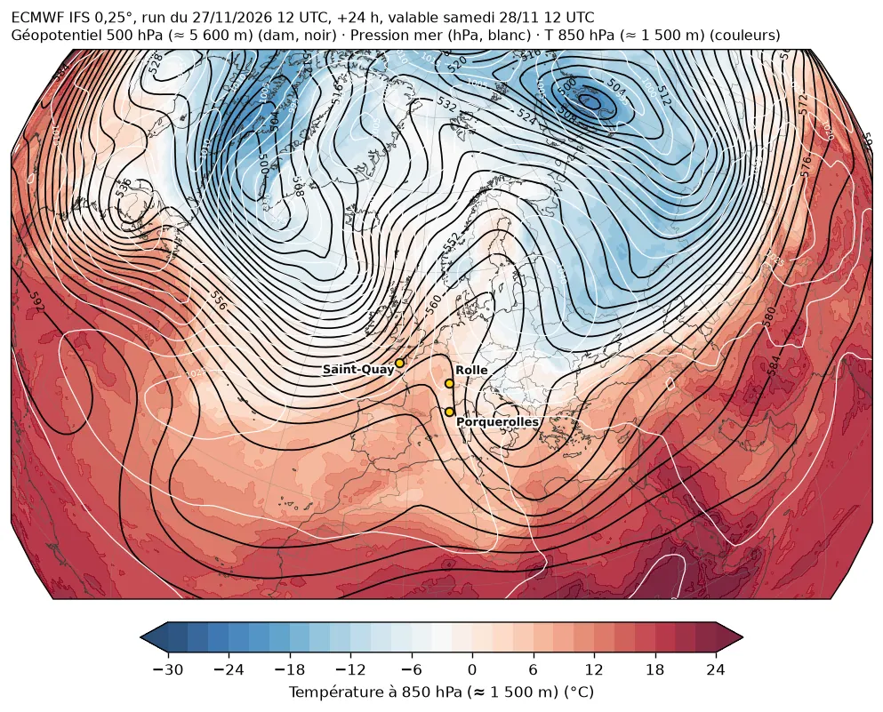
Courants-jets à 250 hPa (≈ 10 400 m)
Samedi 28 midi, 87 nd à 250 hPa (≈ 10 400 m) au-dessus de Saint-Quay : le jet (≥ 80 nd) passe au-dessus de la zone (87 nd au-dessus de Saint-Malo). Dimanche 29 midi, 50 nd à 250 hPa (≈ 10 400 m) au-dessus de Saint-Quay ; le jet le plus proche (≥ 80 nd) est à 850 km, 80 nd à 250 km à l'ouest d'Édimbourg. Lundi 30 midi, 56 nd à 250 hPa (≈ 10 400 m) au-dessus de Saint-Quay ; le jet le plus proche (≥ 80 nd) est à 500 km, 80 nd au-dessus de Bordeaux.
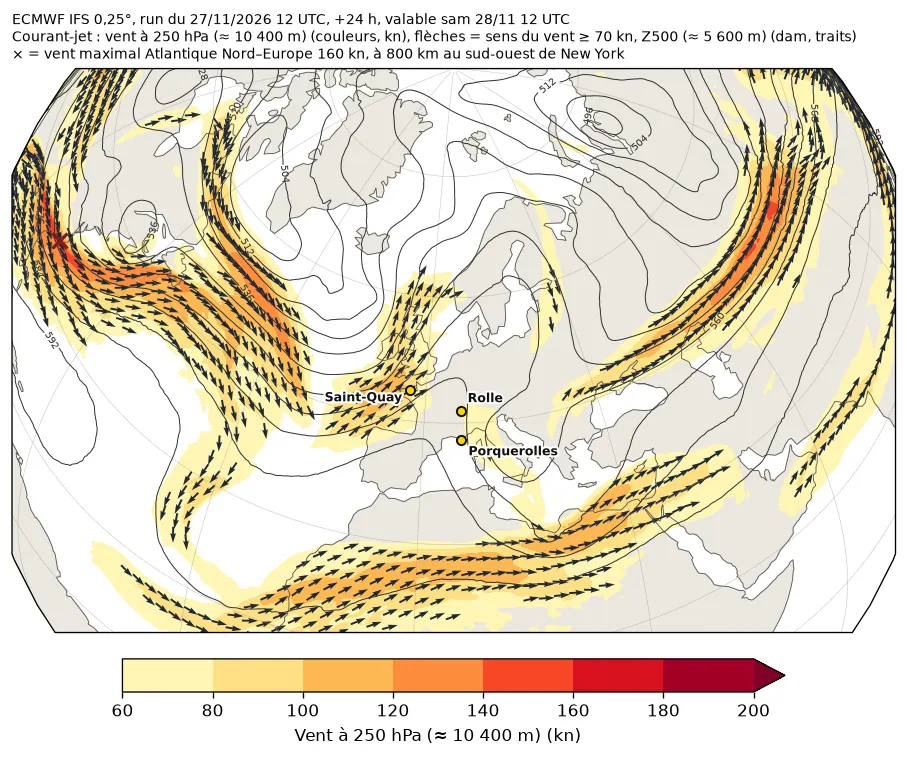
2. Atlantique et Europe ≈ 3 000 km
Cartes officielles du DWD, non modifiées : fronts, anticyclones (H) et dépressions (T) tracés par le service météo allemand.
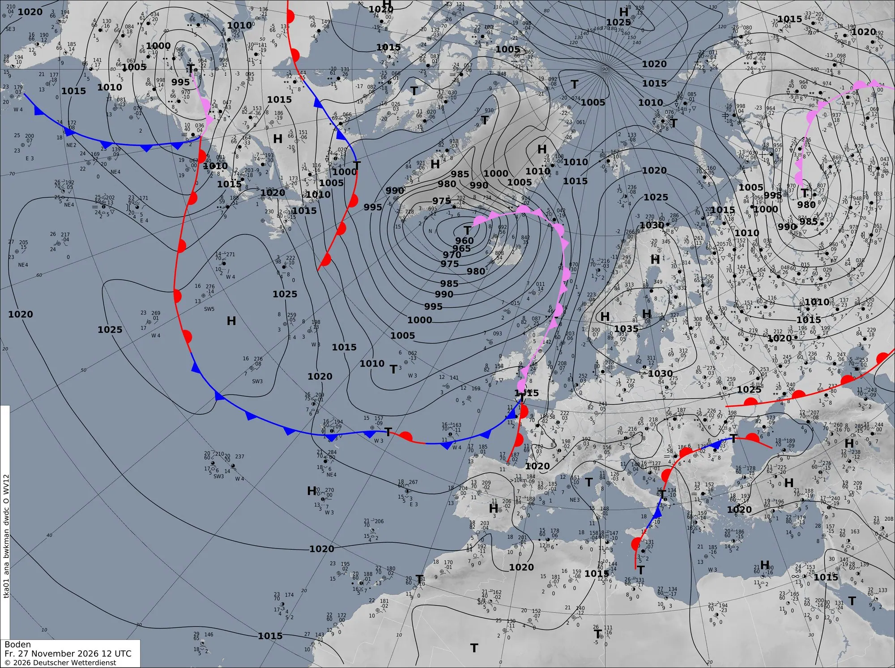
500 hPa et pression mer, dimanche 29/11 à 1 h, dimanche 29/11 à 13 h, lundi 30/11 à 1 h, lundi 30/11 à 13 h (heure suisse)
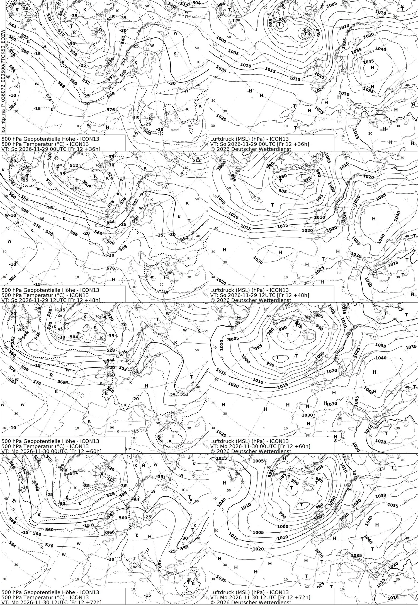

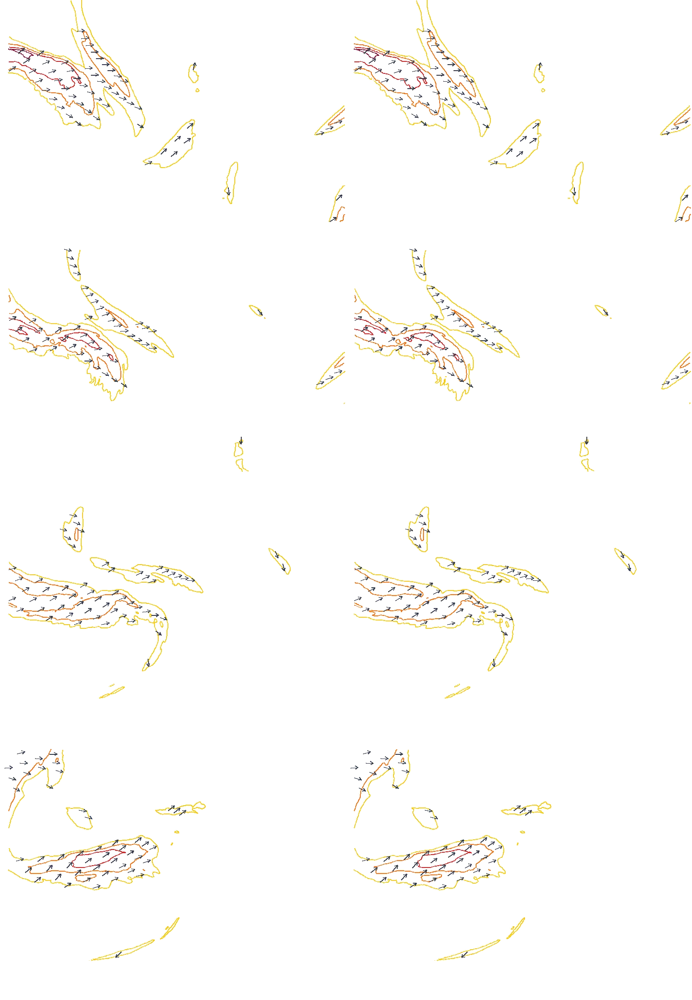
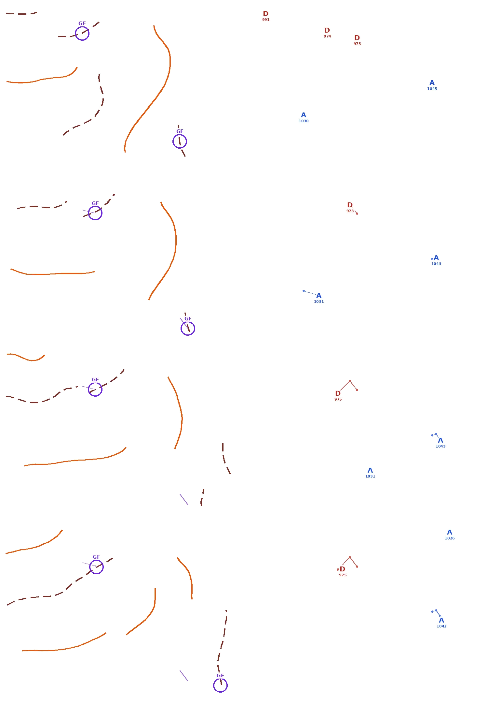
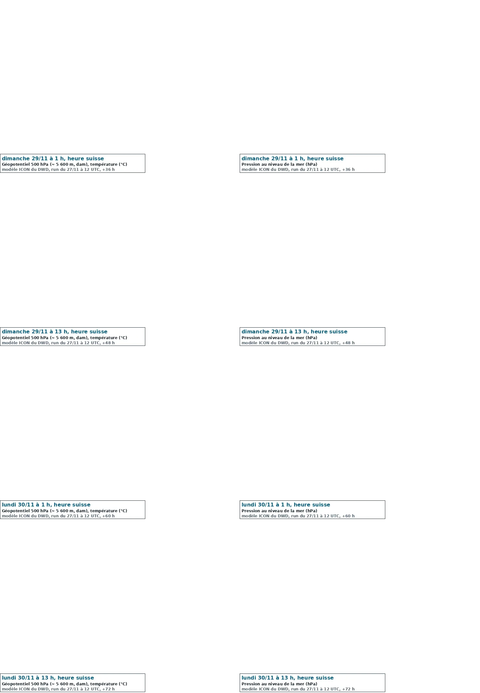
3. Manche et golfe de Gascogne ≈ 1 000 km
Samedi 28/11 16 h : au-dessus de Saint-Quay, vent de sud 20 nd, pression 1 015 hPa ; sur le cadre, 33 % de la surface en eau au-dessus de 18 nd, 6 % au-dessus de 25 nd ; le plus fort 31 nd à 250 km à l'est de Manchester. Dimanche 29/11 16 h : au-dessus de Saint-Quay, vent de sud-ouest 11 nd, pression 1 025 hPa ; sur le cadre, 21 % de la surface en eau au-dessus de 18 nd, 0 % au-dessus de 25 nd ; le plus fort 26 nd à 150 km à l'ouest de Galway. Lundi 30/11 16 h : au-dessus de Saint-Quay, vent de sud-sud-ouest 14 nd, pression 1 026 hPa ; sur le cadre, 69 % de la surface en eau au-dessus de 18 nd, 36 % au-dessus de 25 nd ; le plus fort 36 nd à 100 km au nord-est de Dublin. Avec annotations : trait orange 18 nd, rouge 25 nd, violet pointillé rafales 35 nd.
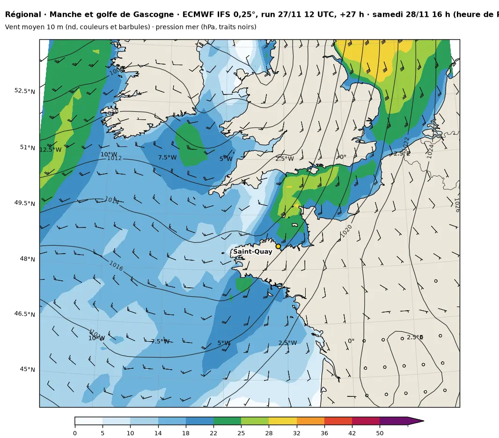
4. Baie de Saint-Brieuc ≈ 70 km
Samedi 28/11 16 h : vent de 10 à 26 nd, rafales jusqu'à 39 nd (le plus fort à 30 km au nord-est de Bréhat), Hs de 0,5 à 2,6 m (la plus forte à 30 km au nord-est de Bréhat). Dimanche 29/11 16 h : vent de 7 à 20 nd, rafales jusqu'à 26 nd (le plus fort à 25 km au nord-ouest de Bréhat), Hs de 0,4 à 2,0 m (la plus forte à 20 km au nord-ouest de Bréhat). Lundi 30/11 16 h : vent de 8 à 19 nd, rafales jusqu'à 26 nd (le plus fort à 25 km au nord-est de Bréhat), Hs de 0,3 à 1,8 m (la plus forte à 20 km au nord-ouest de Bréhat).
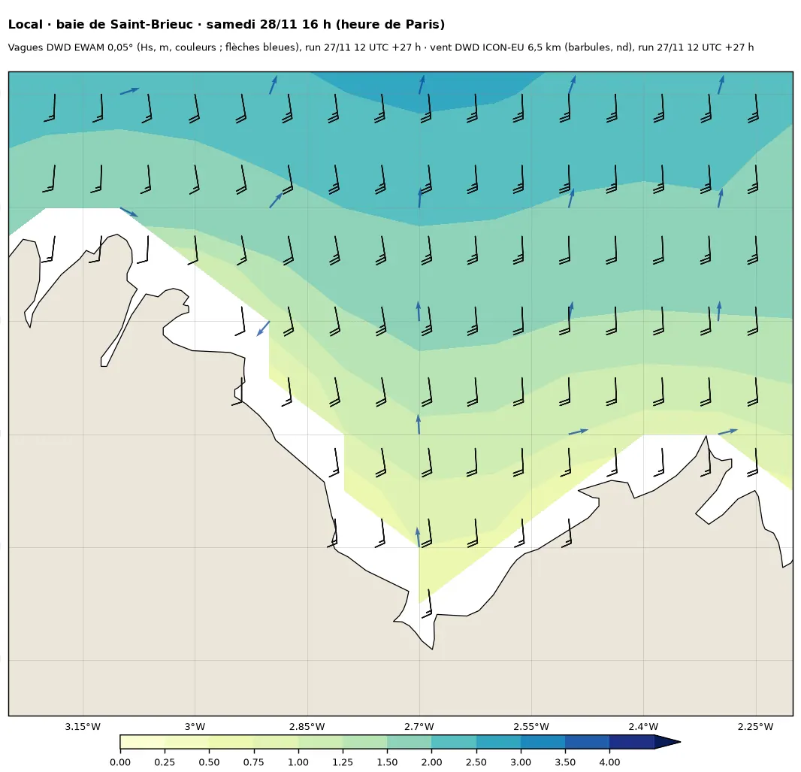
5. Courants ≈ 70 km
Au point « Point GPS de test », le flot porte au sud-sud-est (148°), le jusant au nord-nord-ouest (328°). Renverses de jour : samedi 28/11 9 h 30 (début du jusant), samedi 28/11 16 h 45 (début du flot), dimanche 29/11 10 h 15 (début du jusant), dimanche 29/11 17 h 30 (début du flot), lundi 30/11 11 h 15 (début du jusant), lundi 30/11 18 h 30 (début du flot).
| Moment (Paris) | Phase | Courant au point (nd, vers) | Vent ICON-EU (nd, du) | Effet |
|---|---|---|---|---|
| samedi 28/11 6 h 30 | flot | 1,8 · SSE (151°) | 20 · SSE | vent contre courant |
| samedi 28/11 12 h 30 | jusant | 1,5 · NO (326°) | 22 · S | vent et courant dans le même sens |
| dimanche 29/11 7 h 15 | flot | 1,7 · SSE (151°) | 8 · O | courant de travers au vent |
| dimanche 29/11 13 h 30 | jusant | 1,4 · NO (326°) | 10 · SO | courant de travers au vent |
| lundi 30/11 8 h 15 | flot | 1,5 · SSE (150°) | 10 · S | vent contre courant |
| lundi 30/11 14 h | jusant | 1,3 · NNO (327°) | 15 · SSO | courant de travers au vent |
| Moment (Paris) | Phase | Courant au point (nd, vers) | Vent ICON-EU (nd, du) | Effet |
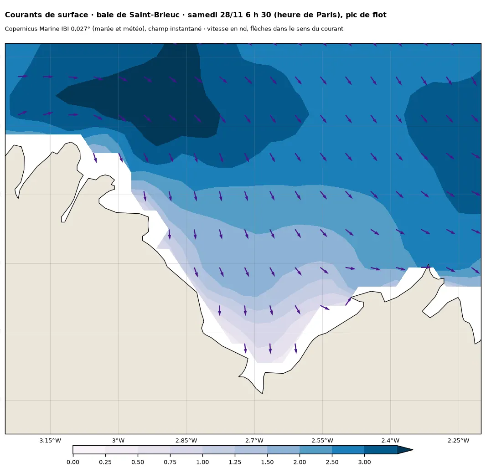
6. Vent, vagues et courants ensemble, toutes les 3 h ≈ 70 km
Une carte toutes les 3 heures de jour, plus une à chaque renverse de courant ; les changements de vent importants (8 nd ou plus, ou 45° ou plus) sont signalés. Le fond est seul au départ : ajoutez les couches une à une.
| Heure (Paris) | Vent ICON-EU (nd, du) | Vagues EWAM (Hs m, de) | Courant IBI (nd, vers) | Ce que ça donne |
|---|---|---|---|---|
| samedi 28/11 7 h | 20 · SSE, raf. 27 | 1,2 · NE | 1,7 · SSE | vent contre courant : mer hachée et creuse, prudence ; courant fort (1,7 nd) ; houle croisée avec le vent ; vent au-delà du seuil orange au près |
| samedi 28/11 10 h renverse, début du jusant | 19 · SSE, raf. 27 | 1,1 · ENE | 0,6 · NO | vent et courant dans le même sens : mer plus longue ; houle croisée avec le vent ; vent au-delà du seuil orange au près |
| samedi 28/11 13 h | 22 · S, raf. 30 | 1,1 · ESE | 1,5 · NO | vent et courant dans le même sens : mer plus longue ; courant fort (1,5 nd) ; vent au-delà du seuil orange au près |
| samedi 28/11 16 h | 19 · SSE, raf. 26 | 1,0 · ESE | 0,5 · NO | vent et courant dans le même sens : mer plus longue ; vent au-delà du seuil orange au près |
| samedi 28/11 17 h renverse, début du flot | 18 · SSE, raf. 25 | 0,9 · E | 0,5 · SSE | vent contre courant : mer hachée et creuse, prudence ; houle croisée avec le vent ; vent au-delà du seuil orange au près |
| samedi 28/11 19 h | 11 · S, raf. 18 | 0,7 · N | 1,8 · SSE | vent contre courant : mer courte, clapot ; courant fort (1,8 nd) ; houle croisée avec le vent |
| dimanche 29/11 7 h | 8 · O, raf. 13 | 0,7 · NNO | 1,7 · SSE | courant de travers au vent : dérive à corriger ; courant fort (1,7 nd) ; houle croisée avec le vent |
| dimanche 29/11 10 h renverse, début du jusant | 8 · SO, raf. 11 | 0,7 · NNO | 0,3 · SSO | courant faible ; houle croisée avec le vent |
| dimanche 29/11 13 h | 10 · SO, raf. 13 | 0,6 · NNO | 1,4 · NO | courant de travers au vent : dérive à corriger ; houle croisée avec le vent |
| dimanche 29/11 16 h | 10 · SO, raf. 14 | 0,6 · NNO | 1,0 · NO | courant de travers au vent : dérive à corriger ; houle croisée avec le vent |
| dimanche 29/11 18 h renverse, début du flot | 9 · SSO, raf. 12 | 0,6 · NNO | 0,6 · SSE | courant de travers au vent : dérive à corriger ; houle croisée avec le vent |
| dimanche 29/11 19 h | 10 · SSO, raf. 13 | 0,6 · NNO | 1,4 · SSE | courant de travers au vent : dérive à corriger ; houle croisée avec le vent |
| lundi 30/11 7 h | 11 · SSO, raf. 14 | 0,7 · NNO | 1,1 · SSE | vent contre courant : mer courte, clapot ; houle croisée avec le vent |
| lundi 30/11 10 h | 12 · S, raf. 16 | 0,6 · NNO | 0,7 · SSE | vent contre courant : mer courte, clapot ; houle croisée avec le vent |
| lundi 30/11 11 h renverse, début du jusant | 13 · S, raf. 17 | 0,6 · NNO | 0,1 · SO | courant faible ; houle croisée avec le vent |
| lundi 30/11 13 h | 13 · S, raf. 18 | 0,7 · NNO | 1,0 · NO | vent et courant dans le même sens : mer plus longue ; houle croisée avec le vent |
| lundi 30/11 16 h | 14 · S, raf. 20 | 0,6 · NNO | 1,1 · NNO | vent et courant dans le même sens : mer plus longue ; houle croisée avec le vent |
| lundi 30/11 19 h renverse, début du flot | 14 · S, raf. 21 | 0,7 · N | 0,5 · SSE | vent contre courant : mer courte, clapot ; houle croisée avec le vent |
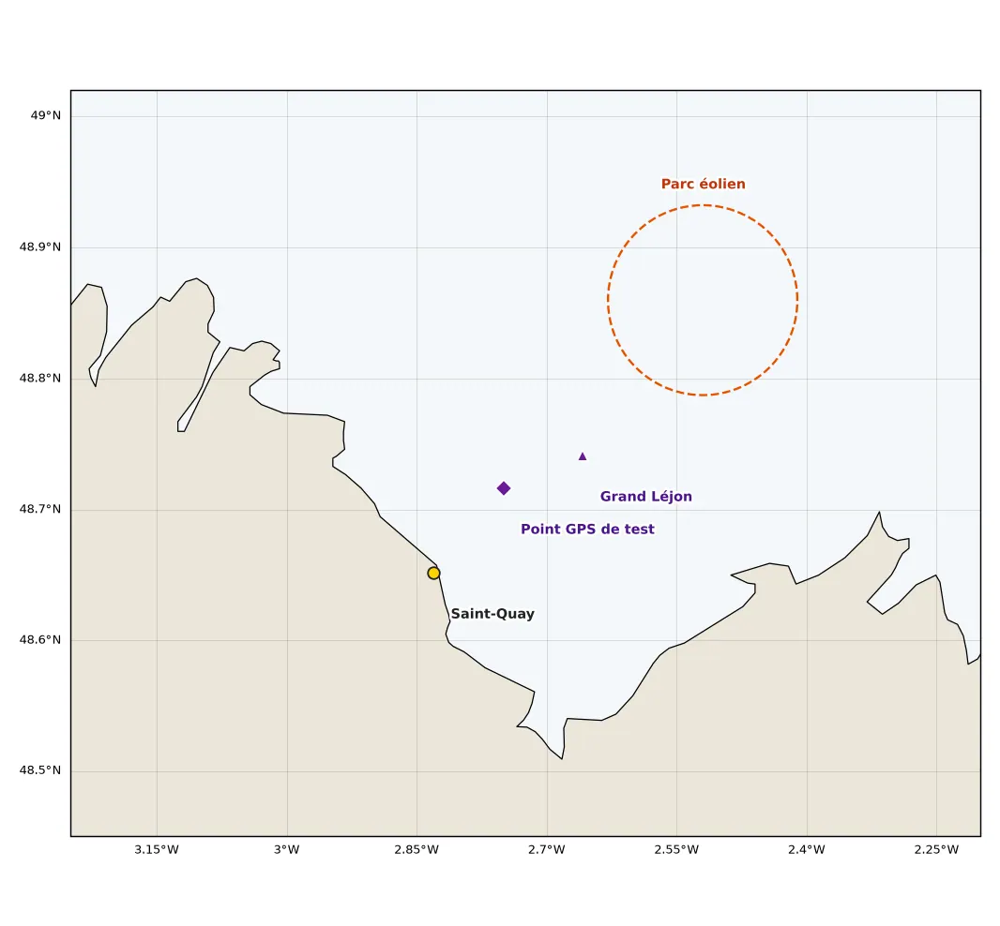
Ce qui manque et sources
- Heures et hauteurs de marée officielles : annuaire des marées du SHOM.
- Bulletin côtier et BMS en cours : ils ne sont pas lus par ce générateur, consultez-les sur Météo-France marine.